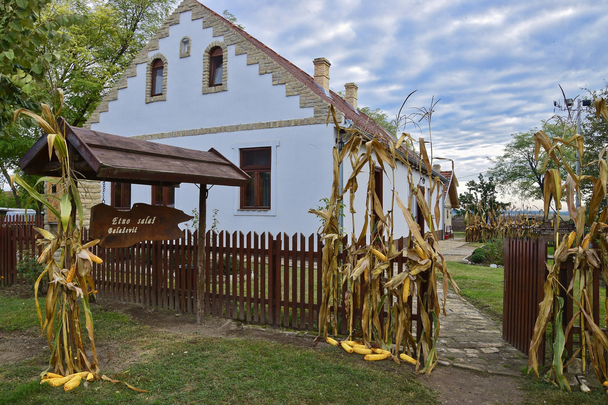

O nas
Naša zgodba
Restavracija Tavankut je nastala iz ljubezni do bogate gastronomske dediščine ravninske Vojvodine in bunjevaške kulturne tradicije. Naš cilj je prebivalcem in obiskovalcem Maribora približati edinstvene okuse, ki so jih generacije naših babic ustvarjale v osrčju Tavankuta in Subotice.
Vsaka jed v naši restavraciji je pripravljena po avtentičnih receptih z uporabo svežih sestavin in tradicionalnih začimb. Verjamemo, da dobra hrana združuje ljudi, zato pri nas vsak gost izkuša pravo vojvodinsko gostoljubnost in domače vzdušje.

Delovni čas
| Dan | Odprto |
|---|---|
| Ponedeljek | ZAPRTO |
| Torek | 11:00 - 22:00 |
| Sreda | 11:00 - 22:00 |
| Četrtek | 11:00 - 22:00 |
| Petek | 11:00 - 22:00 |
| Sobota | 11:00 - 22:00 |
| Nedelja | 11:00 - 22:00 |